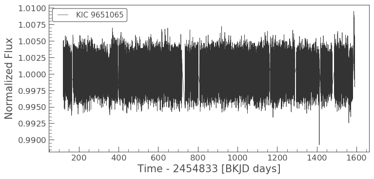
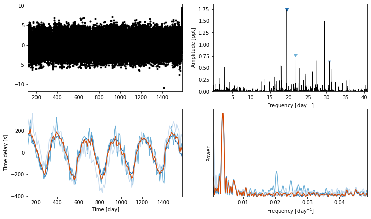

Custom priors¶
Let’s look at something a bit more complicated now, using custom priors to define the model instead of the pb1 and pb2 models provided by Maelstrom.
[1]:
from maelstrom.orbit import Orbit
import numpy as np
import exoplanet as xo
from maelstrom import Maelstrom
import matplotlib.pyplot as plt
[2]:
import lightkurve as lk
lc = lk.search_lightcurvefile('KIC 9651065', mission='Kepler').download_all().stitch().remove_nans()
lc.plot()
/Users/danielhey/anaconda3/lib/python3.7/site-packages/lightkurve/collections.py:212: LightkurveWarning: Stitching a `LightCurveFileCollection` which contains both SAP and PDCSAP_FLUX. Plotting PDCSAP_FLUX. You can remove this warning by using `LightCurveFileCollection.PDCSAP_FLUX.stitch()`.
LightkurveWarning)
[2]:
<matplotlib.axes._subplots.AxesSubplot at 0x113b6bc88>

[3]:
ms = Maelstrom(lc.time, lc.flux, max_peaks=3, fmax=48)
ms.first_look()
WARNING: AstropyDeprecationWarning: Importing LombScargle from astropy.stats has been deprecated and will no longer be supported in future. Please import this class from the astropy.timeseries module instead [astropy.stats.lombscargle]
[3]:
array([<matplotlib.axes._subplots.AxesSubplot object at 0x1c2976de80>,
<matplotlib.axes._subplots.AxesSubplot object at 0x720fac908>,
<matplotlib.axes._subplots.AxesSubplot object at 0x720fa5c18>,
<matplotlib.axes._subplots.AxesSubplot object at 0x720f5ed30>],
dtype=object)

[4]:
freq = ms.freq
time, flux = ms.time, ms.flux
Here is where we define our custom model. PyMC3 has a steep learning curve, so I recommend reading the tutorials or the introduction by …
[5]:
import pymc3 as pm
import theano.tensor as tt
with pm.Model() as model:
# Our orbital period prior
period = pm.Normal("period", mu=300, sd=50)
# The phase of conjunction
phi = xo.distributions.Angle("phi")
# Our standard deviation
logs_lc = pm.Normal('logs_lc', mu=np.log(np.std(flux)), sd=10, testval=0.)
# We want positive lighttimes only, sample in log-space
logasini = pm.Normal('logasini', mu=np.log(200), sd=100, testval=np.log(200))
asini = pm.Deterministic("asini", pm.math.exp(logasini))
# Periastron sampled from uniform angle
omega = xo.distributions.Angle("omega", testval=0.)
# Eccentricity
eccen = pm.Uniform("eccen", lower=0, upper=0.9, testval=0.5)
# The baseline flux
mean = pm.Normal("mean", mu=0.0, sd=10.0, testval=0.003)
lognu = pm.Normal("lognu", mu=np.log(freq), sd=0.1, shape=len(freq))
nu = pm.Deterministic("nu", pm.math.exp(lognu))
# Here, we generate an Orbit instance and pass in our priors.
orbit = Orbit(period=period,
lighttime=asini,
omega=omega,
eccen=eccen,
phi=phi,
freq=nu)
# Orbit makes available a method which will calculate the theoretical light curve given the orbital parameters, times, and fluxes, following
# equation 10 of the paper.
lc = orbit.get_lightcurve_model(time, flux) + mean
# We pass this into our likelihood
pm.Normal('obs', mu=lc, sd=tt.exp(logs_lc), observed=flux)
# This is what our light curve looks like before any optimisation
with model:
plt.plot(time, flux, alpha=0.5)
plt.plot(time, xo.eval_in_model(lc), alpha=0.5)

[6]:
with model:
all_but = [v for v in model.vars if v.name not in ["logP_interval__", "logasini_interval__"]]
print(all_but)
map_params = xo.optimize(start=None, vars=[mean])
map_params = xo.optimize(start=map_params, vars=[logs_lc])
map_params = xo.optimize(start=map_params, vars=[eccen, omega])
map_params = xo.optimize(start=map_params, vars=[phi])
map_params = xo.optimize(start=map_params, vars=all_but)
map_params = xo.optimize(start=map_params, vars=[logasini])
map_params = xo.optimize(start=map_params, vars=all_but)
map_params = xo.optimize(start=map_params, vars=[period])
map_params = xo.optimize(start=map_params, vars=all_but)
[period, phi_angle__, logs_lc, logasini, omega_angle__, eccen_interval__, mean, lognu]
optimizing logp for variables: [mean]
5it [00:00, 5.40it/s, logp=-1.119855e+05]
message: Optimization terminated successfully.
logp: -111985.6908205761 -> -111985.54397631987
optimizing logp for variables: [logs_lc]
9it [00:00, 30.61it/s, logp=-1.078247e+05]
message: Optimization terminated successfully.
logp: -111985.54397631987 -> -107824.74147651007
optimizing logp for variables: [omega, eccen]
32it [00:01, 25.46it/s, logp=-1.075212e+05]
message: Optimization terminated successfully.
logp: -107824.74147651007 -> -107521.1612666544
optimizing logp for variables: [phi]
90it [00:03, 28.65it/s, logp=-1.074983e+05]
message: Desired error not necessarily achieved due to precision loss.
logp: -107521.1612666544 -> -107498.32770824614
optimizing logp for variables: [lognu, mean, eccen, omega, logasini, logs_lc, phi, period]
187it [00:07, 25.41it/s, logp=-1.064790e+05]
message: Desired error not necessarily achieved due to precision loss.
logp: -107498.32770824614 -> -106479.01236347636
optimizing logp for variables: [logasini]
5it [00:00, 23.92it/s, logp=-1.064790e+05]
message: Optimization terminated successfully.
logp: -106479.01236347636 -> -106479.01236347551
optimizing logp for variables: [lognu, mean, eccen, omega, logasini, logs_lc, phi, period]
86it [00:03, 26.45it/s, logp=-1.064790e+05]
message: Desired error not necessarily achieved due to precision loss.
logp: -106479.01236347551 -> -106479.01236347294
optimizing logp for variables: [period]
45it [00:01, 29.57it/s, logp=-1.064790e+05]
message: Desired error not necessarily achieved due to precision loss.
logp: -106479.01236347294 -> -106479.01236347294
optimizing logp for variables: [lognu, mean, eccen, omega, logasini, logs_lc, phi, period]
87it [00:03, 25.24it/s, logp=-1.508653e+05]
message: Desired error not necessarily achieved due to precision loss.
logp: -106479.01236347294 -> -106479.01236347294
[7]:
map_params
[7]:
{'period': array(272.00127765),
'phi_angle__': array([2.41012264, 3.76717216]),
'logs_lc': array(0.21291784),
'logasini': array(5.22159273),
'omega_angle__': array([-3.61203158, 2.63690969]),
'eccen_interval__': array(0.03306721),
'mean': array(0.00075123),
'lognu': array([2.96926914, 3.07787136, 3.42757631]),
'phi': array(0.5691498),
'asini': array(185.22896978),
'omega': array(-0.9401957),
'eccen': array(0.45743945),
'nu': array([19.47767893, 21.71213593, 30.80189809])}